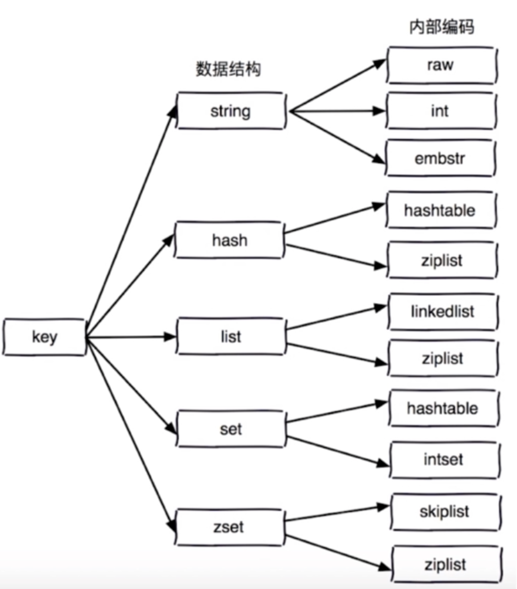
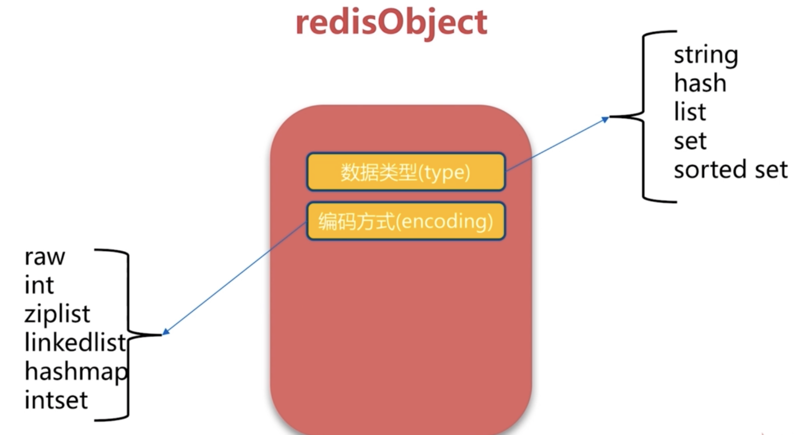
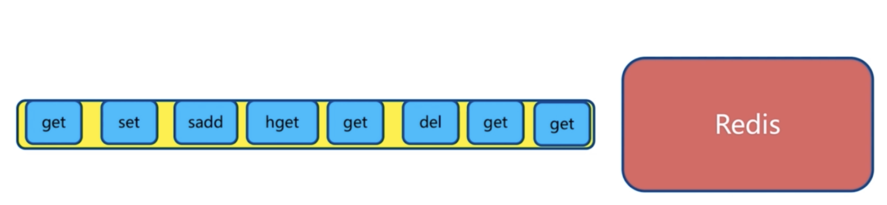
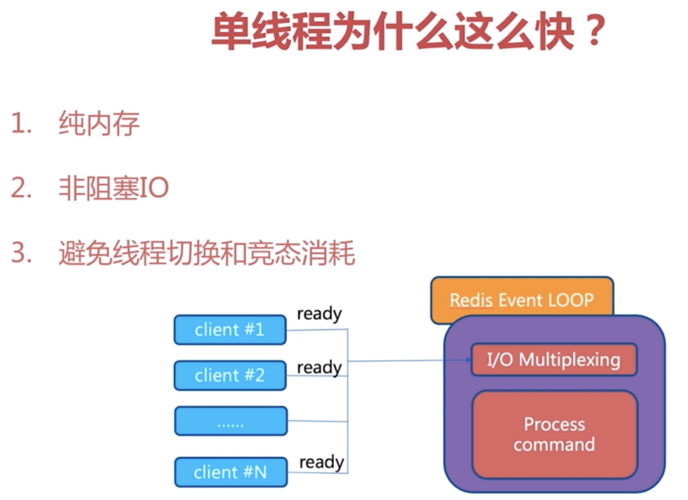
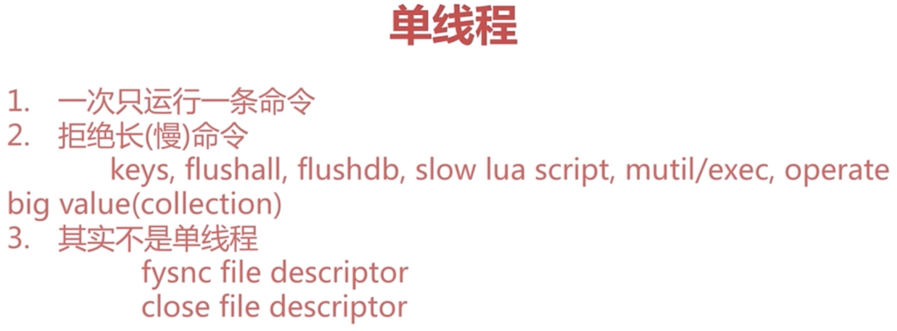
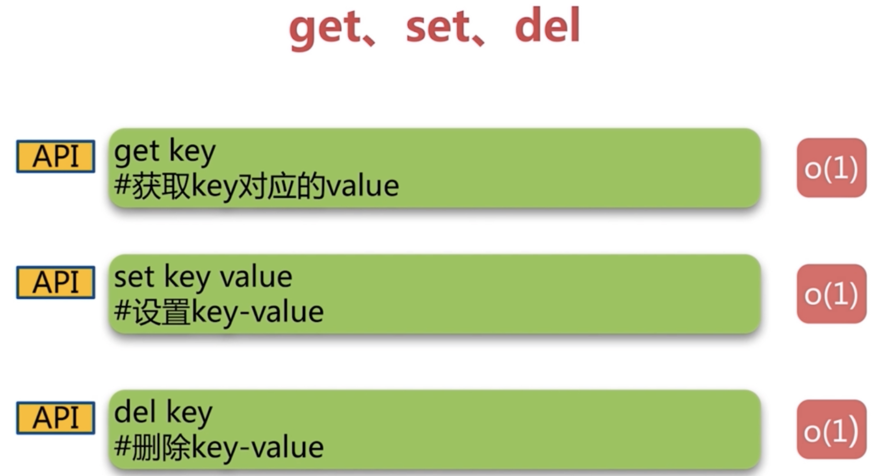
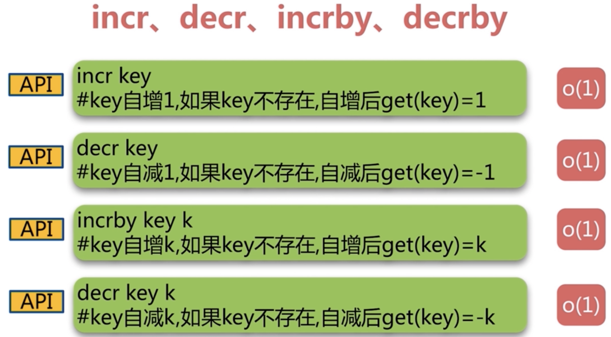
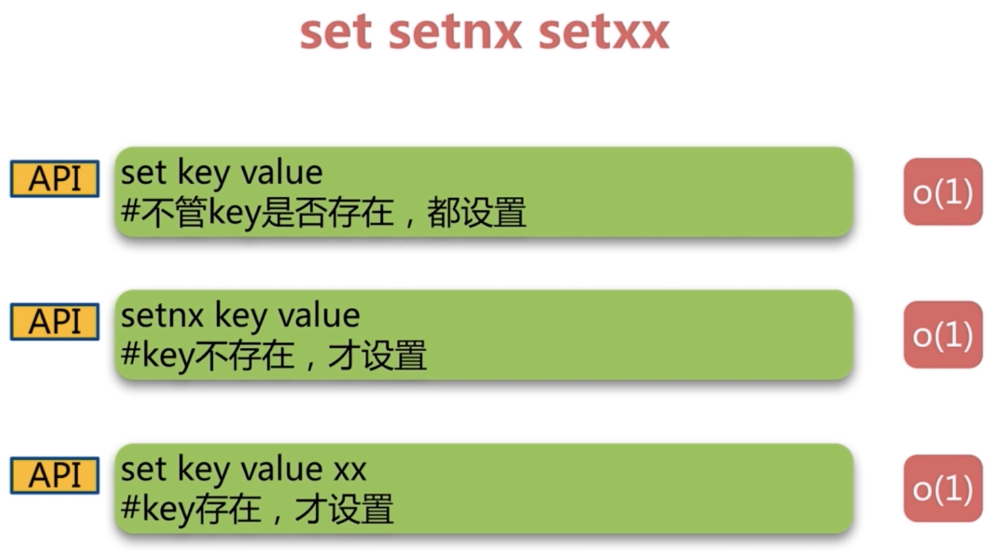

redis初识
redis特性
数据存在内存中（速度快的主要原因）
C语言编写
单线程
redis所有数据保存在内存中，对数据的更新将异步的保存到磁盘上
多种数据结构
支持多种编程语言
功能丰富
简单
主从复制
高可用、分布式
redis适用场景
redis实验环境搭建
环境准备
（1）Parallels Desktop
（2）CentOS（CentOS-7-x86_64-DVD-2003.iso）
（3）网络环境：桥接网络（WI-FI）
（4）linux网络配置
1
2
3
4
5
6
7
8
9
10
11
12
13
14
15
16
17
18
19
20
| # 通过ip addr 命令获取网卡名称
ip addr
vi /etc/sysconfig/network-scripts/ifcfg-eth0
TYPE=Ethernet
PROXY_METHOD=none
BROWSER_ONLY=no
BOOTPROTO=dhcp
DEFROUTE=yes
IPV4_FAILURE_FATAL=no
IPV6INIT=yes
IPV6_AUTOCONF=yes
IPV6_DEFROUTE=yes
IPV6_FAILURE_FATAL=no
IPV6_ADDR_GEN_MODE=stable-privacy
NAME=eth0
UUID=c342a3ec-d2f5-48f9-a858-6dae42718cc5
DEVICE=eth0
ONBOOT=yes # 开机自动启动网卡
|
1
2
3
4
5
6
| vi /etc/hostname
sorozy-redis
# 重启生效
reboot
|
redis下载与安装
1
2
3
4
5
6
7
8
9
10
11
12
13
14
15
16
17
18
19
20
21
22
23
24
25
26
27
| # 确保wget可以使用
yum install wget -y
# 下载相关依赖库
yum install gcc-c++ -y
cd /opt/soft
wget http://download.redis.io/releases/redis-3.0.7.tar.gz
# 解压缩
tar -xvf redis-3.0.7.tar.gz
# 建立软连接
ln -s redis-3.0.7 redis
cd redis
make
# make MALLOC=libc
make install
cd src
ll | grep redis-
|
启动方式一：在任意目录下启动redis（默认启动方式，非守护进程）
启动方式二：在任意目录下使用redis客户端连接redis
1
2
3
| # 动态参数启动redis
redis-cli -h 127.0.0.1 -p 6379
redis-server --port 6380
|
启动方式三：配置文件方式启动（建议在生产环境使用这种方式）
准备工作
1
2
3
4
5
6
7
8
9
10
11
12
13
14
15
| # 配置文件方式启动
cd /opt/soft/redis
mkdir config
cp redis.conf config
cd config
mv redis.conf redis-6381.conf
# 查看的时候去除空格和注释
cat redis-6381.conf | grep -v "#" | grep -v "^$"
cat redis-6381.conf | grep -v "#" | grep -v "^$" > redis-6382.conf
|
1
2
3
4
5
6
7
8
9
10
11
12
13
14
15
16
17
18
19
20
21
22
23
24
25
26
27
28
29
30
31
32
33
34
35
36
37
38
39
40
41
42
43
44
45
46
47
48
49
50
51
| cat redis-6382.conf
daemonize no
pidfile /var/run/redis.pid
port 6379
tcp-backlog 511
timeout 0
tcp-keepalive 0
loglevel notice
logfile ""
databases 16
save 900 1
save 300 10
save 60 10000
stop-writes-on-bgsave-error yes
rdbcompression yes
rdbchecksum yes
dbfilename dump.rdb
dir ./
slave-serve-stale-data yes
slave-read-only yes
repl-diskless-sync no
repl-diskless-sync-delay 5
repl-disable-tcp-nodelay no
slave-priority 100
appendonly no
appendfilename "appendonly.aof"
appendfsync everysec
no-appendfsync-on-rewrite no
auto-aof-rewrite-percentage 100
auto-aof-rewrite-min-size 64mb
aof-load-truncated yes
lua-time-limit 5000
slowlog-log-slower-than 10000
slowlog-max-len 128
latency-monitor-threshold 0
notify-keyspace-events ""
hash-max-ziplist-entries 512
hash-max-ziplist-value 64
list-max-ziplist-entries 512
list-max-ziplist-value 64
set-max-intset-entries 512
zset-max-ziplist-entries 128
zset-max-ziplist-value 64
hll-sparse-max-bytes 3000
activerehashing yes
client-output-buffer-limit normal 0 0 0
client-output-buffer-limit slave 256mb 64mb 60
client-output-buffer-limit pubsub 32mb 8mb 60
hz 10
aof-rewrite-incremental-fsync yes
|
1
2
3
4
5
6
7
| vim redis-6382.conf
daemonize yes # 是否以守护进程的方式启动
# pidfile /var/run/redis.pid # 进程号存储位置，实际上还是需要用端口号进行区别
port 6382 # 端口号
dir "/opt/soft/redis/data" # 工作目录
logfile "6382.log"
|
1
2
3
| cd /opt/soft/redis
mkdir data
|
配置文件方式启动
1
2
3
4
5
6
7
8
| redis-server config/redis-6382.conf
# 查看进程
ps -ef | grep redis-server | grep 6382
# 查看日志
cd data
cat 6382.log
|
Redis API的理解和使用
- 通用命令
- 字符串类型
- 哈希类型
- 列表类型
- 集合类型
- 有序集合类型
通用命令
1
2
3
4
5
6
7
8
9
10
11
12
13
14
15
16
17
18
19
20
21
22
23
24
25
26
| # 计算数据库中所有的健，一般不在生产环境使用，O(n)的命令
keys
# 算出数据库的大小,O(1),有内置计数器
dbsize
# 判断一个key是否存在 返回 0 / 1 O(1)
exists key
# 删除多个key O(1)
del key [key...]
# 设置key的过期时间 O(1)
expire key seconds
# 查询key的过期时间,-1代表没有过期时间，-2 代表已经过期
ttl key
# 去掉 key 的过期时间
persist key
# key的类型，可以返回 String hash list set zset none O(1)
type key
|





字符串
- 对于redis来说所有的key都是字符串
value限制512M
使用场景
缓存、计数器、分布式锁




感谢鼓励